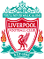

Provável Escalação
por FabioVascão
Atualizado em 07/Outubro/2022
Liverpool
Ultimas Notícias
Arthur Melo (lesão múscular), Naby Keita (lesão múscular) e Alex Oxlade-Chamberlain (lesão na coxa) estão todos fora do jogo do Arsenal, enquanto Andrew Robertson (lesão no joelho) está apenas na fase de treino de 'corrida' a partir de sexta-feira, então também parece improvável estar envolvido. Curtis Jones (lesão na perna) está mais à frente em sua reabilitação, no entanto, com Jurgen Klopp relatando que o meio-campista foi "o mais próximo" dos jogadores lesionados do Liverpool de retornar e que ele treinou totalmente pela primeira vez em um mês na quinta-feira. Ibrahima Konate, Calvin Ramsay e Caoimhin Kelleher também estão todos livres de lesões, embora o condicionamento físico continue sendo um problema, pois nenhum deles jogou um minuto de futebol competitivo em 2022/23. Klopp usou um 4-4-2/4-2-3-1 contra o Rangers na terça-feira, dizendo na entrevista coletiva de sexta-feira que queria que o Liverpool fosse "imprevisível novamente". Uma repetição dessa configuração tática não pode ser descartada após o sucesso no meio da semana, mas o Arsenal representará uma ameaça muito mais ofensiva do que a equipe escocesa e Klopp enfatizou que escolheria a formação que fosse "melhor para o próximo adversário ou o melhor para nós no momento". Fabinho pode voltar ao time ao lado de Jordan Henderson e Thiago Alcantara, então, com as limitações defensivas de Harvey Elliott provavelmente expostas contra os Gunners. O em boa forma Roberto Firmino parece um provável titular para retornar após um descanso no meio da semana, com Luis Diaz e Mohamed Salah os claros favoritos para flanqueá-lo. Diogo Jota ou Darwin Nunez vão ficar mais atentos se Klopp ficar com um 4-4-2/4-2-3-1, embora Elliott e Fabio Carvalho também sejam opções como número 10 se o treinador continuar com essa forma. Os quatro defensores provavelmente escolhem a si mesmos no momento, a menos que Klopp decida colocar Konate no XI inicial sem qualquer preparação.